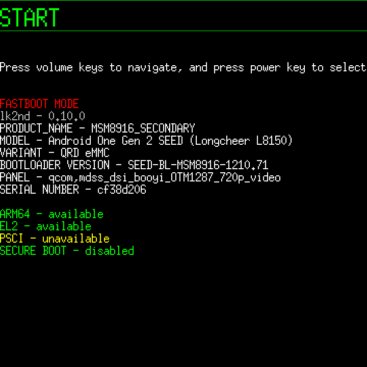

lk2nd/Lk1st
|
 lk2nd fastboot screen example | |
| Name | lk2nd |
|---|---|
| 1st stage | P |
| 2nd stage | yes |
| Resources | source code |
{kind=link}
lk2nd/Lk1st is a bootloader for devices based on Qualcomm system-on-chips (SoCs) and simplifies booting standard operating systems by providing unified boot and flashing interface.
Contents
Features
lk2nd/Lk1st provides automatic device and hardware detection, additional bootloader features like file system boot and Dual Booting (booting from SD card) and additional firmware features include booting secondary CPU cores and various of debugging commands that allow better understanding of the hardware for research and development purposes.
lk2nd vs lk1st
- lk2nd: "secondary" bootloader intended for devices where existing firmware cannot be replaced easily (most smartphones and tablets). In this configuration, lk2nd does not replace the stock bootloader. Instead, it is packed into an Android boot image, which is then loaded by the stock bootloader just like the original Android image. The real operating system can be placed in the boot partition with 512 KiB offset or stored in a ext2 file system. It does not have to be Android or even Linux, any kind of kernel can be packed into an Android boot image.
- lk1st: primary bootloader intended for single-board computers (SBCs) and expert users. In this case, it is the "first" bootloader responsible for loading the main operating system.
Supported SoCs
-
lk1st-msm8916: APQ8016, MSM8216, MSM8916, MSM8929, MSM8939 -
lk2nd-msm8916: APQ8016, MSM8216, MSM8916, MSM8929, MSM8939 -
lk2nd-msm8974: MSM8974 -
lk2nd-msm8226: APQ8026, MSM8226, MSM8926 -
lk2nd-msm8953: MSM8953
Usage
lk2nd provides the standard Android fastboot protocol for flashing/booting Android boot images.
Press Volume Down while booting to enter Fastboot mode. Press Volume Up while booting to boot into Recovery mode.
Note: If your stock bootloader uses the same key combinations, you need to wait a bit before pressing the volume keys. Usually, waiting until the screen turns on and/or the device vibrates should be enough to make the stock bootloader ignore the keys.
fastboot flash lk2nd lk2nd.img can be used to update lk2nd directly from its fastboot interface.
Note: fastboot flash boot boot.img will flash the actual boot image with 512 KiB offset into the boot partition. This is done to avoid replacing lk2nd (since it is also booted from the boot partition).
Other fastboot commands work normally.
Troubleshooting
If the device shows up via fastboot you can get a log file from lk2nd using fastboot oem lk_log && fastboot get_staged <output-file>, where <output-file> is either some text file to write to (e.g. output.txt) or /dev/stdout to write the log to standard output.
Quirky devices
Some devices have a quirky bootloader, which doesn't boot lk2nd correctly and fallback to stock Fastboot/Odin Download Mode instead.
Common traits on quirky devices
- 1 GiB of RAM
- Kitkat 4.4 bootloader with ARM32 only support
- Crash after running
fastboot oem readl 0x004a8000[1] in lk2nd - Kernel panics without tsens workaround[2]
Known quirky devices
- Acer Iconia Talk S (acer-a1-724) (Fixable with secure boot disabled)
- Samsung Galaxy Ace 4 (samsung-heatqlte)
- Samsung Galaxy Core Prime LTE (samsung-coreprimelte)
- Samsung Galaxy Grand Prime (samsung-gprime)
- Xiaomi Redmi 2 (xiaomi-wt88047) (Fixable with secure boot disabled)
Current known solution is to flash Lolipop 5.1 or above firmware to get a better bootloader, or flash TZ/HYP firmware from DragonBoard 410c, which is DANGEROUS. Otherwise you will have to comment out unused device trees to avoid that the bootloader gets confused.
See also
- Template:lk2nd
- lk2nd/Lk1st project page.
- Chipsets page on the EFIDroid wiki for an exact mapping of LK targets to SoCs.